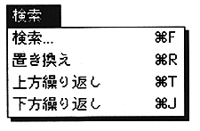
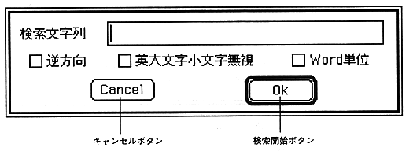

The "Search" menu has a string search command and a string replacement command that operate on the text window.

Search (shortcut: Command-F)
This function searches for an arbitrary character string in the active text window. The dialog below appears, and when you enter the required information, it searches for a character string that meets the conditions, and if it exists, the screen position is adjusted so that the line containing the character string falls within the display range. It is highlighted.
Once a search string has been set, it is valid until it is set again.

Search string This is the area for entering the string you want to search.
Three types of search options are available when clicked with the mouse.
Reverse direction Searches upward from the current line (usually downward).
Ignore uppercase and lowercase letters Searches for the same character sequence regardless of the case of the letters.
Word unit Treats the entered character string as one word.
, When searching by entering WORD
WORD WORD
, WORD1B WORD1B
, WORD2C WORD2C
WORD3D WORD3D
Only the WORD in the first line is searched and displayed.